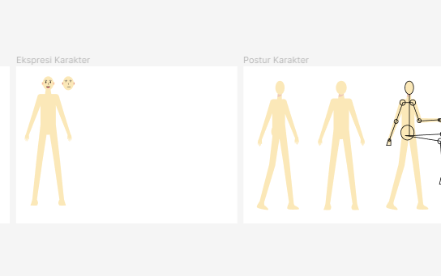
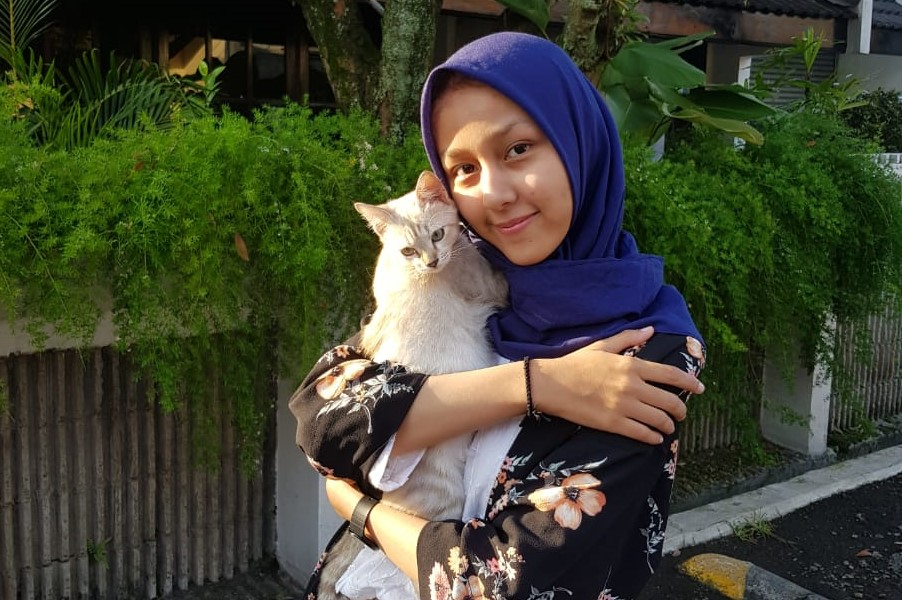

Personal Life
Social Impact
Currently I'm participating for social impact. I'm developing a social organization called "Bersama Lansia". Bersama Lansia will participate and ensure the health and wellness of Indonesian elderly.
Improvement
Learning how to design illustration & character set was begun when I rarely found the illustration that suited with my UI design.
Cats
It's my main source of happiness. It could makes my mood boosted, or makes me healed from the exhaustion! <3